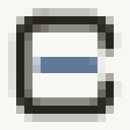

I read the brief, then read your site. The colors below are lifted straight from your own CSS tokens, not matched by eye, so this sits on openbudget.sh without adjustment.
An open container. The frame is the budget as one whole, and it is deliberately not sealed: there is an opening in the middle of the right side. A closed box reads as a system you are locked into. An open one reads as the Open in your name.
A line of data inside it. It begins inside the container instead of crossing it, so it reads as your records, not as a currency symbol.
And it leaves. The line runs out through the opening. That is your product in one stroke: transactions do not stay locked in the bank, they arrive in the spreadsheet and the assistant you already use. No CSV in the middle. The silhouette left behind by the opening hints at a B, which suits Budget.
Your site animates the current mark, so the replacement moves too. This was not in the brief, it is included.
The frame never moves. Only the transaction does: it appears inside the container, grows to the edge, rests, then leaves through the opening. That restraint is the whole point. A logo that moves everywhere reads as decoration. A logo that moves in exactly one place reads as meaning, and here the meaning is your core promise: the data goes where you work, by itself.
Four second loop, seamless by construction rather than by trimming. It ships as an animated SVG of about one kilobyte, plus GIF and MP4. Lottie on request.
The tab icon of this page is the real thing. You are already looking at it at 16 pixels.

16 px, magnified 10xTwo decisions sit in that small square. The icon carries its own tile. A bare near-black mark vanishes into a dark browser toolbar, and a bare light one vanishes into a light toolbar, so no single fixed color survives both. Switching color by system theme inside the icon file is possible but unevenly supported, and an icon is the wrong place to gamble. The tile settles it, and it is also what an app icon wants anyway.
The compact form is drawn separately, not cropped. Without the outgoing line the shape has to be recentered on its own, otherwise the icon sits off balance.
--background | #f8f7f2 | frame sits on it |
--foreground | #25241d | the container |
--brand | #2f4d77 | the line of data |
--brand (dark) | #86a3cf | same line, dark theme |
Type is set in Geist, the face your product already uses.
The prompt. A chevron for the input line and a record beneath it. Honest to a product you talk to in plain words, and it holds up better than anything else at 16 pixels. Cooler in tone than the mark above, which is why I lead with the container. Your brief asks for two or three concepts, and a third gets built once I know which way you lean.
Editable vector, SVG, PDF and transparent PNG exports, primary and compact lockups, light, dark, monochrome and one color versions, plus a short sheet of color and spacing rules. Full commercial rights, original work.
One limit, stated up front: the editable source is SVG and PDF. I do not work in Adobe Illustrator and will not send you an .ai file. For a product that lives on the web this is usually the more useful format, but you should know before you decide.